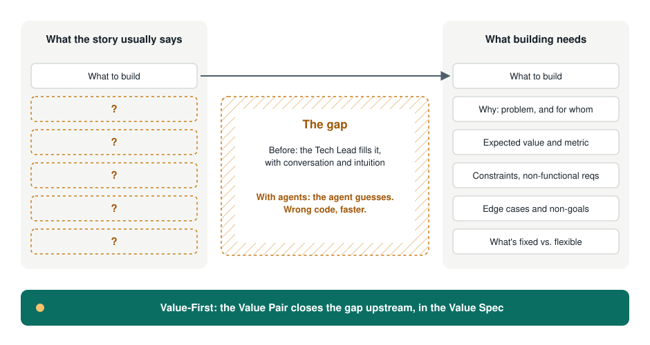
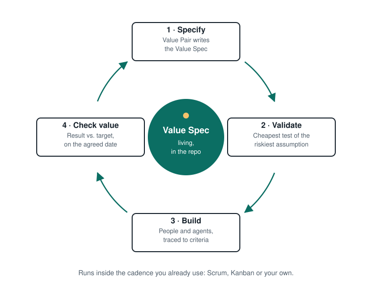
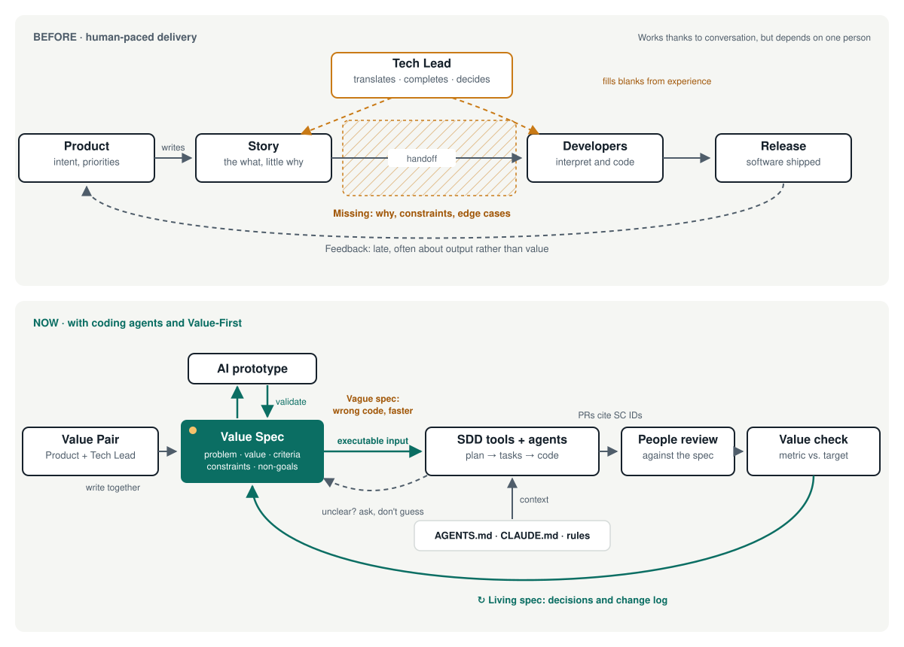
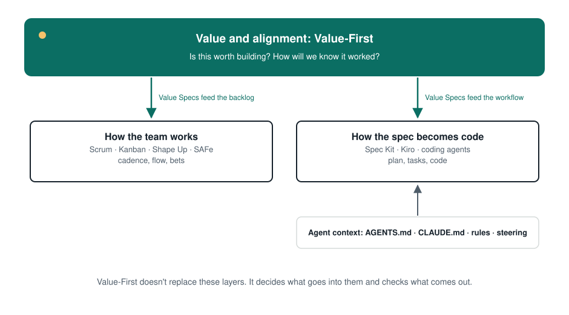

From ritual to value, from spec to software.
Value-First Development
Value-First Development makes the value of each piece of work explicit, shared and measurable before anyone builds it, so that people and coding agents build the right thing, not only build it fast.
A light layer on top of Scrum, Kanban or your own process. Open source, MIT.
The gap between spec and development
Every way of working we use today answered a real problem. Writing things down gave us clarity, Agile gave us short feedback loops and Scrum gave us a steady cadence. Value-First keeps all of that.
In many teams, though, the ceremonies stay while the purpose fades. Stories describe what, rarely why, and almost never the constraints or how success will be measured.
Someone fills that gap, and it's usually the Tech Lead: translating, completing and deciding, mostly unseen. It works, but the work stays invisible, depends on one person and happens late.

The idea
One short, living document per item of value, written by Product and the Tech Lead together.

Value Spec
One page: problem, expected value, measurable success criteria, constraints, what's fixed and what's flexible. Versioned next to the code and readable by people and agents.
Value Pair
Product owns the problem and the value. The Tech Lead owns feasibility and makes the spec buildable. The translation work gets a name and a partner.
The cycle
Specify, validate, build, check value, then back to the spec. It runs inside the cadence you already have.
Six principles
Value is explicit before the work starts
Problem, value and how we'll know, stated up front. Deadlines and scope serve the value.
The spec is a value contract, and it lives
Short, versioned with the code, changed with a reason. For agents, it's executable input.
Validate before you build
Reduce the biggest uncertainty the cheapest way. Prototypes are evidence, not deliverables.
Product and Tech specify together
Two owners per spec. The Tech Lead's translation work becomes explicit and shared.
A changed plan is information, not failure
Fixed and flexible are agreed up front. Changes go into the spec, visibly.
People own the outcome; AI speeds it up
Decisions, review, security and technical debt stay with people. Measure outcomes, not output.
Specs in the AI era
Coding agents read specs and act on them. That turns the gap from a nuisance into a bottleneck.

The spec became executable input
A person interprets a vague story. An agent executes it and guesses the rest. Models are “exceptional at pattern completion, but not at mind reading” (GitHub, 2025).
AI amplifies the system it lands in
DORA's 2025 research calls AI an amplifier and finds that, without a user-centric focus, adopting it can hurt team performance (DORA 2025).
The Tech Lead as specification engineer
The translation work becomes central. Value-First shares it with Product instead of leaving it to one person.
A layer above the tools
Spec Kit, Kiro and AGENTS.md handle spec to code. Value-First decides what is worth building and how we'll know it worked.

Limits, stated plainly. Productivity gains aren't guaranteed, AI code needs human review, and heavy upfront specs can bring back waterfall. Value-First answers with small, value-scoped, living specs.
Read the full argument and sources →You're Value-First if…
Signals you can see in the work, not statements of intent.
- Every relevant item in progress has a Value Spec with at least one measurable success criterion.
- Every spec has two named owners: Product and Tech Lead.
- Specs live in the repo, and your agent instructions point to them.
- Risky items get a prototype or spike before the commitment.
- Scope and date changes show up as spec changes, with a reason.
- You check value after delivery and can name what didn't work.
- People review all AI-generated code, and stability is tracked alongside speed.
Value Map
For initiatives bigger than one spec. Like C4 does for architecture: three levels of zoom, four rules, and you can draw it on a whiteboard.
- OutcomeWhy, and how will we know?
- SlicesWhat first, and what are we betting on?
- CriteriaHow do we know this slice works?
Fictional example, based on the VS-014 template example.
Billing contacts ask support for invoices.
Invoice tickets: ~120 → ≤ 40 / week, 6 weeks after launch
Out: payments, invoice editing↑ contribute to
Bet: customers use the portal instead of emailing support (validated 5/6)
In buildBet: audits need date ranges (2 of 6 asked)
NextBet: receiving beats searching (not validated)
Maybe↓ zoom into VS-014
Four rules
- Every box has a type, a name and one sentence.
- Every outcome and slice has a metric or a signal.
- Every arrow has a verb.
- One drawing per level. Zoom in only where you need to.
Level 4, code, isn't drawn: tests and PRs cite the SC IDs.
Try it on one item this week
- Pick one upcoming item with real value and some uncertainty.
- Write a Value Spec as a pair. Keep it to a page.
- Validate the riskiest assumption with the cheapest prototype.
- Build, then check the value on the date you set.